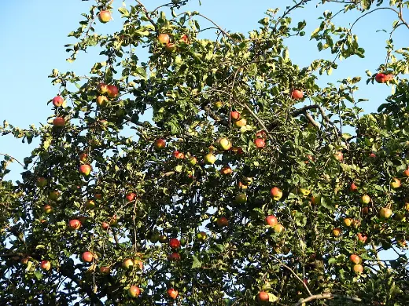

Wild apple
Wild apple is a wild fruit you can forage from August to October across the United States. Feral apple trees along old farm lanes, hedgerows and abandoned orchards; every tree tastes different.

When is wild apple in season in the United States?
Wild apple is usually in season August to October. Timing shifts with weather, latitude and altitude.
Where does wild apple grow in the United States?
Wild apple grows across the United States. Regions: Northeast, Southeast, Midwest, Great Plains, Southwest, Rocky Mountains, Pacific Northwest, California, Alaska.
How do you recognise wild apple?
Feral apple trees along old farm lanes, hedgerows and abandoned orchards; every tree tastes different.
How do you harvest wild apple?
Pick only fully ripe fruit that comes away easily, into a shallow container so it doesn't crush. Leave plenty on the plant for birds and wildlife.
How do you eat wild apple?
Cider, sauce, pies and apple butter; sour ones add pectin to jams.
How do you store wild apple?
Store cool, or dry rings.
What is wild apple good for?
Vitamin C.
What can you cook with wild apple?
- Wild apple pie: Mixed feral apples in a double-crust pie with cinnamon.